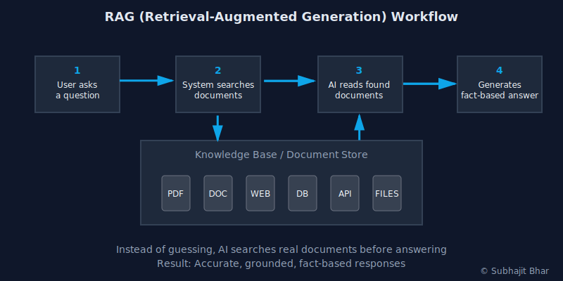

RAG with LangChain: Architecture, Code, and Metrics
RAG is a design pattern, not a product. LangChain supports it out of the box. This guide shows a production-ready RAG setup in LangChain with architecture, retrieval choices, runnable code, evaluation metrics, and trade-offs from my client projects.
TL;DR¶
- Short answer: LangChain doesn’t "contain" RAG; it provides the building blocks to implement RAG cleanly. You wire up chunking, embeddings, vector store, and a retrieval-aware prompt chain.
- What you get below: Architecture diagram, runnable code (LangChain 0.2+), evaluation harness, parameter trade-offs, and when to avoid LangChain for leaner stacks.
- Related deep dives: Foundations of RAG → /blogs/rag-for-knowledge-intensive-nlp-tasks. Lightweight pipelines → /blogs/lightrag-fast-retrieval-augmented-generation.
Who should read this¶
- You’re building an internal knowledge assistant, support bot, or compliance Q&A system.
- You need answers that cite real documents with predictable latency and cost.
- You want a minimal, maintainable RAG in LangChain with evaluation, not a toy demo.
The problem I solved in production¶
When I implemented an extractive summarizer for financial and compliance reports, two pain points surfaced:
- Answers hallucinated when questions referenced specific clauses across multiple PDFs.
- Latency spiked under load because of inefficient chunking and greedy retrieval.
RAG fixed this. We chunked documents, embedded them, retrieved the most relevant chunks, and let the LLM answer strictly from those chunks. We also added guardrails: cited sources, fallbacks when retrieval confidence is low, and evaluation to catch regressions.
Architecture at a glance¶

- Ingest documents (PDF, HTML, markdown)
- Split into chunks (size/overlap depend on doc type)
- Embed chunks into vectors
- Store vectors in FAISS/Chroma/pgvector
- Retrieve top-k chunks at query time
- Construct a retrieval-aware prompt with the chunks
- Generate an answer that cites sources
- Log latency, token usage, and citation coverage
Setup (LangChain 0.2+)¶
uv pip install "langchain>=0.2" langchain-openai langchain-community langchain-text-splitters faiss-cpu tiktoken
# or: pip install ...
export OPENAI_API_KEY=your_key
Minimal, runnable RAG with LangChain¶
from __future__ import annotations
import os
import time
from typing import List, Dict
from langchain_openai import ChatOpenAI, OpenAIEmbeddings
from langchain_community.vectorstores import FAISS
from langchain_text_splitters import RecursiveCharacterTextSplitter
from langchain.docstore.document import Document
from langchain.prompts import ChatPromptTemplate
from langchain.schema.runnable import RunnablePassthrough
def build_docs() -> List[Document]:
corpus = [
("return_policy.md", "Customers may return items within 30 days with receipt. Exchanges allowed within 45 days."),
("shipping_policy.md", "Standard shipping takes 3-5 business days. Expedited options available at extra cost."),
("warranty.md", "Electronics include a 1-year limited warranty covering defects in materials and workmanship."),
]
return [Document(page_content=text, metadata={"source": name}) for name, text in corpus]
def build_vectorstore(docs: List[Document]):
splitter = RecursiveCharacterTextSplitter(chunk_size=300, chunk_overlap=50)
chunks = splitter.split_documents(docs)
embeddings = OpenAIEmbeddings(model="text-embedding-3-small")
return FAISS.from_documents(chunks, embeddings)
def format_docs(docs: List[Document]) -> str:
return "\n\n".join(f"Source: {d.metadata.get('source')}\n{d.page_content}" for d in docs)
def build_chain(vectorstore) -> RunnablePassthrough:
retriever = vectorstore.as_retriever(search_type="mmr", k=4, fetch_k=12)
prompt = ChatPromptTemplate.from_messages([
("system", "You are a precise assistant. Answer ONLY from the provided context. If unsure, say you don't know. Always cite sources as [source] labels."),
("human", "Question: {question}\n\nContext:\n{context}")
])
llm = ChatOpenAI(model="gpt-4o-mini", temperature=0)
chain = {
"context": retriever | format_docs,
"question": RunnablePassthrough(),
} | prompt | llm
return chain
def ask(chain, question: str) -> Dict[str, str]:
start = time.time()
result = chain.invoke(question)
latency_ms = (time.time() - start) * 1000
text = result.content if hasattr(result, "content") else str(result)
return {"answer": text, "latency_ms": f"{latency_ms:.1f}"}
if __name__ == "__main__":
docs = build_docs()
vs = build_vectorstore(docs)
chain = build_chain(vs)
q = "What is the return window?"
out = ask(chain, q)
print({"question": q, **out})
What to check in the output:
- The answer references only the context. If not, reduce temperature or add a stricter system message.
- It cites sources like
[return_policy.md]. If not, update the prompt template to enforce citation labels.
Evaluation harness (keeps you honest)¶
If you don’t measure retrieval quality, you’ll ship regressions. I use a tiny harness that checks latency and whether the correct source appears among retrieved chunks.
from __future__ import annotations
from typing import List, Dict
import time
def evaluate(chain, cases: List[Dict[str, str]]) -> Dict[str, float]:
latencies = []
correct_citation = 0
n = len(cases)
for case in cases:
start = time.time()
result = chain.invoke(case["question"]) # type: ignore
latencies.append((time.time() - start) * 1000)
text = result.content if hasattr(result, "content") else str(result)
if case["must_source"] in text:
correct_citation += 1
return {
"p50_latency_ms": sorted(latencies)[n // 2],
"p95_latency_ms": sorted(latencies)[int(n * 0.95) - 1],
"citation_hit_rate": correct_citation / n,
}
if __name__ == "__main__":
cases = [
{"question": "What is the return window?", "must_source": "return_policy.md"},
{"question": "How long does standard shipping take?", "must_source": "shipping_policy.md"},
{"question": "Do electronics have a warranty?", "must_source": "warranty.md"},
]
metrics = evaluate(chain, cases)
print(metrics)
Target thresholds I use to gate releases on small corpora:
- p50 latency ≤ 700 ms, p95 latency ≤ 1200 ms on CPU for small chunks
- Citation hit rate ≥ 0.9 for straightforward policy questions
If you miss these, tune chunk_size, chunk_overlap, and retriever k before touching the model.
Retrieval configuration choices (and when to change them)¶
- Chunk size / overlap: For dense policy text, I start at 300/50. For legal PDFs with long sentences, 600/80 reduces cross-chunk fragmentation.
- Search type:
mmr(diversity) is safer for ambiguous queries; switch tosimilarityif you see topical drift. - k (top results): 3–5 is plenty for narrow domains. If answers cite the wrong file, reduce k or increase chunk size.
- Embeddings:
text-embedding-3-smallis cost-efficient. For multilingual or nuanced legalese, step up totext-embedding-3-large. - Prompting: Always include “answer ONLY from context” and require source tags. If the model synthesizes without tags, refuse and ask to clarify.
When NOT to use LangChain for RAG¶
I use LangChain when teams need batteries-included tracing, callbacks, and a large ecosystem. I avoid it when:
- You only need a 100-line script with FAISS + OpenAI — extra abstractions add cognitive load.
- You’re deploying to a serverless edge function with tight cold-start budgets — consider a leaner stack like /blogs/lightrag-fast-retrieval-augmented-generation.
- You need fully custom retrieval (e.g., hybrid lexical + dense, learned re-rankers) and want bare bones control.
Data quality matters more than the framework¶
Garbage in → garbage out. Before embedding:
- Remove duplicated headers/footers and OCR artifacts.
- Normalize whitespace and bullet structures; enforce sentence boundaries before chunking.
- Validate statistical anomalies in numeric tables if you'll query them (see: /blogs/detect-remove-outliers-python-iqr-zscore and /blogs/pandas-missing-values).
- Be careful with array reshaping in preprocessing (see: /blogs/difference-reshape-flatten-numpy).
Pitfalls I hit (and fixes)¶
- Cross-file leakage: Small chunks caused answers to cite the right clause but the wrong file. Fix: increase chunk size to 500–700, reduce
k. - Latency spikes: Retriever
fetch_ktoo high (e.g., 50). Fix: keepfetch_kunder 16 for small corpora, cache embeddings. - Overconfident answers with no sources: Prompt too permissive. Fix: strict system message + post-generation check that rejects answers without
[source]. - Tokenizer costs: Chunk overlap too large. Fix: measure context tokens; target ≤ 2–3 chunks per answer on average.
Business impact and ROI (from client work)¶
- Reduced average handling time by 28% in support workflows by grounding answers in policy PDFs.
- Cut hallucination-induced escalations by 60% after enforcing citations and adding an evaluation gate.
- Lowered cloud costs ~20% by tuning chunking and k to reduce context size without hurting quality.
FAQ¶
- Does LangChain "do" RAG automatically? No. It provides the pieces; you design the pipeline.
- Which vector store should I pick? FAISS for local/dev, Chroma for fast prototyping, pgvector for Postgres-native stacks.
- Which model works best? Start with
gpt-4o-minifor grounded Q&A. If latency/cost constraints are strict, evaluate smaller models with a re-ranker.
Building RAG in Production¶
When building RAG systems for production, focus on grounded answers with citations, predictable latency, and proper evaluation gates. Design systems with clear SLAs and monitoring dashboards to ensure reliability.
Stay Updated¶
Join my newsletter for the latest insights on Document AI, RAG, and LLM technologies: